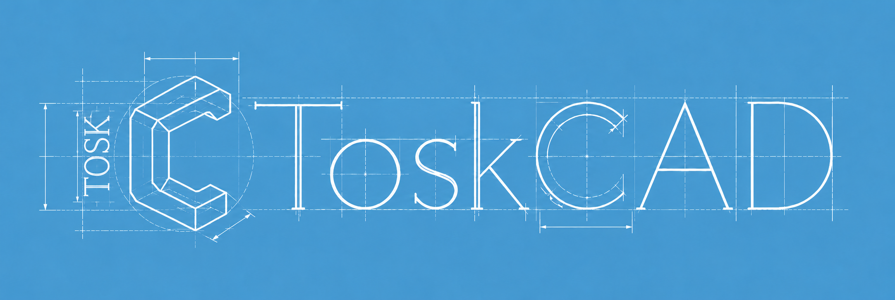

Open-source CAD for people who build.
Start with a sketch or a 3D part, then work out the dimensions, joints and drawings for your build. ToskCAD brings tools for wood, metal and printed parts into the same project.
Download ToskCAD Explore the examples ↓

Pick a project.
The projects below come with the app. Open one from Examples for an editable copy, and try a different size or construction.

Workbench with a welded frame.
A beech worktop sits on a steel tube frame, with a woodworking vise tucked underneath. Change the bench size, dog-hole spacing or vise opening.
Wood makes the top and jaws. Weld handles the frame and its 22 welds; Common adds the rods, screw and handle. The drawing locates the welds and lists their sizes.


Geometry example; frame loads and weld strength need separate engineering checks.

Plywood cabinet.
Open the doors and pull out the drawers to see the construction. The cabinet width, depth and height control the plywood panels, shelving and drawer arrangement.
The Wood workbench builds the panels and joints. Hinges, mounting plates and drawer runners are pinned references to the included hardware library. The drilling sheet shows where the connectors go.
 Connector and drilling positions ↗
Connector and drilling positions ↗
Aluminium front panel.
A bent aluminium panel holds six buttons and a display. Black PETG end parts screw through its flanges. Edit the opening positions or change the panel size to suit your enclosure.
Sheet metal builds the panel; Common models the printed ends. Separate export sets pick out the printed parts. The buttons and display are illustrative, so use your hardware dimensions before making one.
Adjustable drill guide.
Three metal bushings guide 3, 5 and 8 mm drills through a printed PETG body. An adjustable fence sets the distance from the edge of your workpiece; changing it moves the clamps along with it.
Common creates the body, fence and thumb knobs. In Export → Print, the printed tag selects those four parts and leaves out the bushings and fasteners. Orient and arrange them in your slicer, then check the bushing fit on your printer.


Apartment with workshop.
Draw walls and openings in Architecture, then furnish the rooms with Common. The workshop brings in the cabinet and workbench as linked projects, keeping their source files and revisions.
The floor plan comes from the model, with wall cuts, door swings and dimensions. Open the 3D view to check the layout and the space around the furniture.
 Inspect the 3D model ↗
Inspect the 3D model ↗Layout example; structural and building-code checks remain separate.
Find the right tools.
We’re bringing dimensions, materials and stock into Project, and sketching into Model. Motion gets its own workspace for relationships and movement.
- Project
- Set dimensions and formulas. Define the materials, sheet thicknesses and profile stock for your build.
- Model
- Sketch and shape parts. Choose a workbench for wood, metal, printed parts or architecture, all in the same model.
- Motion
- Set relationships and travel limits. Try different poses and check for interference or clearance between parts.
- Drawings
- Put views and sections on a sheet, with dimensions, connector positions and weld callouts.
- Export
- Write manufacturing files, choose the parts to print, or prepare a scene to render.
Yours to change.
ToskCAD is open source under GPL v3 or later. The code is on GitHub, and contributions are welcome.
We’re building it around how things are made: stock, joints, fasteners and the drawings you take into the workshop. The workbenches share their parts, so a printed fitting can sit alongside a wooden panel or a bent metal bracket.
The workspace layout above is in development. The current release still has separate Parameters and Sketch tabs. Some workflows are unfinished and project formats can change; the verification notes record what has been checked.